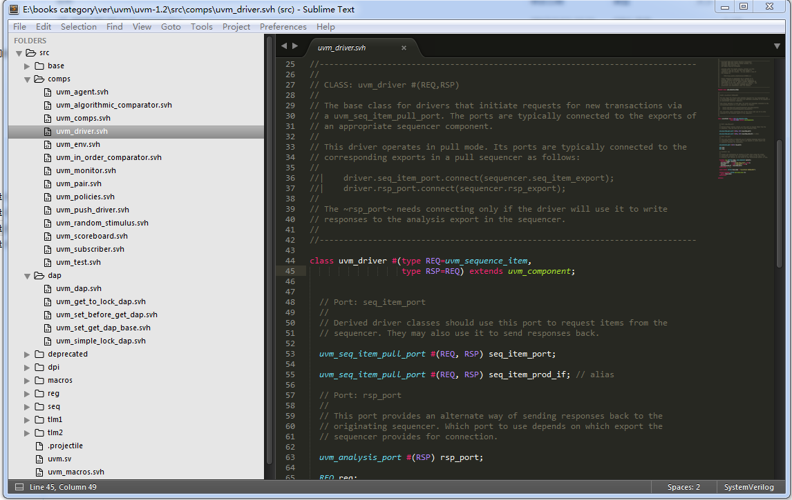
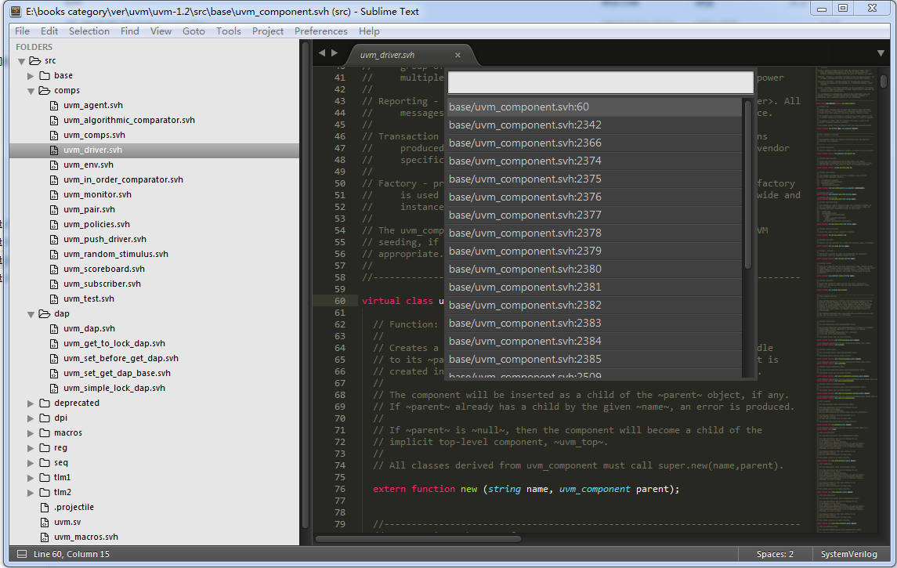

Study UVM Source Code with Sublime3
UVM和Sublime3
学习UVM的很好的一个方法是读源码，去网上下载UVM 源码，然后就可以了。 很多主流的编辑器，对systemverilog的支持都很一般，我这里推荐使用 sublime3。 但是首先需要安装一个插件管理器 packagecontrol 。 之后，ctrol+shift+p，选择命令PackageControl:install package，搜索关键字systemverilog，安装好后，就大功告成了。 打开sublime3，然后在菜单栏里选择File->open folder，打开UVM的源码目录，好了开工。
比如我看到下面这行代码，想看看uvm component的定义，那就在uvm component的位置上按F12。
class uvm_driver #(type REQ=uvm_sequence_item,
type RSP=REQ) extends uvm_component;
我们就能找到它的位置了，如下图所示。
